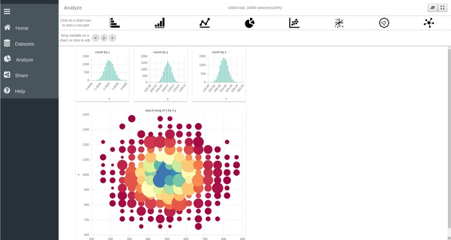

SPOT : A Basic Tutorial with a CSV file
SPOT is an interactive visualization tool for multi-dimensional data that allows quickly analysing complex datasets and easily identifying correlations between variables. For this simple example we will use a small comma separated value file (.csv) containing 3 facets. Each facet is stored in a column and contains the values of a random variable. We can easily create such .csv file using Python:
#!/usr/bin/env python
import numpy as np
nrows = 10000
ncols = 3
# generate draws from a normal distribution; the draws in each column
# are centered around 5.0, 10.0, and 0.0, respectively
data = np.random.normal(loc=[5.0, 10.0, 0.0], size=(nrows, ncols))
# export to a csv file with ',' delimiter
np.savetxt('simple_data.csv', data, header='x, y, z',
delimiter=',', comments='')
Note that the header argument specifies the names of the three facets. Once
the .csv file has been created, go to the SPOT demo page to try it out:
Alternatively, you can download and build it by following the instructions here:
https://github.com/NLeSC/spot/
SPOT Homepage
On the first login, SPOT's Help tool welcomes you. You can access the Help function at any time via the bottom of the left Menu bar. Orginally developed for the iDark project, SPOT maintains a space-oriented appearance. Due to its origin, SPOT focuses on big-data exploration with the possibitly to explore and analyse the data set in great detail and just in a few clicks.
The traditional workflow of a SPOT session consists of three main steps:
Load the dataset You can load a CSV or a JSON file or connect to a postgres database.
Analyse the data Exploit the native SPOT features to plot and explore one or multiple data sets.
Share the information Export your data and/or your entire SPOT session or Upload a previous SPOT session.
You can easily navigate along these three steps from the menu left bar. A dedicated button is associated to each step and allows you going back and forth along the workflow. A detailed description of each step of the workflow is given in the following. From the SPOT Home page you can also:
 Start the Demo Session
Start the Demo Session A demo file will be fetched online and automatically uploaded on the active SPOT session. This way, you can have a quick look at a final session in a simple click!
 Access the GitHub Page
Access the GitHub PageGo to the SPOT Github page to clone the repository and interact with our developers:
Access the NLeSC webpage
Don't forget to visit the Netherlands eScience Center webpage to browse through the multiple projects and find opportunities for collaboration.
Step 1. Load your data

The first step of the SPOT workflow consists of uploading your data set to the browser. To load your data into the app, click on the Datasets button in the left menu bar. This takes you the main loading page of SPOT (see above). Three options are available to load your data in SPOT.
Connect to a server You can connect to a database where your dataset is stored
Upload a JSON file You can upload a simple JSON file. JSON, or JavaScript Object Notation, is a popular file format for attribute-value pairs and array data types. SPOT fully support JSON files.
Upload a CSV file. You can upload a simple CSV file. CVS, or comma separated values, are simple files containing different variables stored in column format. To facilitate the import of CSV files, several options are accessible by clicking on the settings icon
 . You can for example specify how
the columns are delimited and if there is a specific header in the file or not.
. You can for example specify how
the columns are delimited and if there is a specific header in the file or not.

For our purpose, we are going to upload the CSV file we have created above. To do that, click on the CSV button and navigate to the file in the popup window.
Edit your data
Once the data file has been loaded in SPOT, you have the possibility to
delete it, or edit its properties by clicking on its setting icon . This will open the Edit page of the data. On this page
all the facets detected by SPOT are displayed. In our case this dataset only
contains 3 facets called x, y and z. These names correspond to the header of
the .csv file we have created above.

You can disable/enable individual facets by clicking on the slider button next to its name . By clicking on the setting icon in a given variable box, you can also edit the properties of this particular variable.
Step 2. Analyze your data
The main feature of SPOT is its ability to easily plot and explore the data using multiple coordinated views, cross-plot selection, and drilldown. To start plotting your data and exploring its facets click on Analyze in the left menu bar. This takes you to SPOT's plotting page. From this page you can create, edit and interact with different plots.

On the top of the page you have access to different plotting functions ranging from simple histograms to more advanced network charts. Below this are the facets that are present in the data set. You can recognise here the three variables x, y and z contained in our .csv file.
Simple histogram plots
To start with the visualization we are first going to create three histograms, representing the variables x, y and z. To do so:
- Click on the Bar Chart
 icon to create a
first histogram plot.
icon to create a
first histogram plot. - Drag the variable x to the Group by entry box on the plot.

Thanks to these two easy steps we have created a histogram of the x variable. As you can see, other options are available for the barchart plot via different entry boxes. These entry boxes are:
Subdivide by subdivide each bar in different category controlled by the variable dragged in the box
bar height fix the height of each bar not by the number of data points it aggregates but by the variable dragged in the entry box.
Error bar Plot the error bar for each bar
As we'll see in the following, each type of plot has its own set of options that can be controlled by specific variables. For this example we will only use the x variable in the Group by entry box and leave all the other boxes empty.
To finalize the visualization of this plot, and hide the entry boxes, click
on the settings wheel icon located on the top
right corner of the plot. Clicking on this image allows switching between an
edit mode and a view mode of the plot. The Edit and View modes have different
purposes:
- Edit Mode Configure the aspect of the plot by specifying what to plot and how to plot it
- View Mode Explore your data by selecting part of it and/or zoom in specific part of your dataset
You can repeat the same operations for the two remaining variables and have three histograms plotted on your SPOT session. You can freely move the windows to align them horizontally:

Customizing plots
It is possible to customize the appearance of each plot. Return to Edit mode by
clicking on the wheel in th top right corner . Then click on the Group by box of one of the histogram to open the
configuration of this plot. There you can change the range of the x-axis,
specify the number of bins you want for the histogram and many more options. For
example here we specify that the x axis should range between -4 and 4 and
contains 25 bins. Click on Analyze in the left menu bar to return to your
plot.

Scatter plot
SPOT also allows for more advanced plotting functions such as line plots, 2D and 3D scatter plots, network plot, etc. We are here going to create a scatter plot of x versus y.
- Click on the bubble-chart icon

- Drag the x variable in the X axis box of the new plot
- Drag the y variable in the Y axis box of the new plot
As before, click on the setting wheel of the plot to finalize its visualization. One important thing to
remember is that SPOT only plots binned data. Hence each symbol on the scatter
plot represent the aggregation of multiple data points. The binning of the
plot can be customized by clicking on the X axis box. There you can specify
the range of the x axis as well as the number of bins required along the axis.
The same thing can be done for the y-axis.
As you can see, other options are available to configure the scatter plot. You can for example control the point color and the point size using one of the variables. To understand the effect of these options drag the z variable to the Point color box of the scatter plot. Each point is now colored according to the values of the z variables. Several modes are accessible by clicking on the Point Color box. Namely the color of each point can represent the average, sum, standard deviation of the z-values, or simply the number of points it aggregates. We can also use the values of the z variables to control the size of the points by dragging the z variable in the Point size box of the plot.

Dynamic Data Selection
One of the main strengths of SPOT is the possibility to slice through your data simultaneously across different plots. This enables you to get a better understanding of the underlying structure of your dataset and to easily discover new relations hidden in the vast amount of information it contains.
To understand what slicing across multiple plots means, select a range of values by clicking on individual bars in the bar chart of the x variable. Repeat the same operation on the two remaining bar charts to select value ranges for the y and z variable. As you can see the 2D scatter plot is automatically adjusted to only represent the data points that were selected in the different bar charts.

You can remove the selection by pressing the undo button  on the top left corner of the plot.
on the top left corner of the plot.
Dive into your data
As already mentioned earlier, the data plotted in the SPOT plots are binned. Hence a single point or bar represents the aggregation of multiple data points. With SPOT, it is possible to dive into your data by progressively zooming into a specified area of the plot. For example in the 2D scatter plot you can select the central region of the plot by clicking on different points of the plot. The selected area appears as a yellow rectangle on the plot.

An important feature of SPOT is the possiblity to zoom in and out of your data to obtain a more detailed or a more general representation of the data. To navigate inside your dataset use the two buttons on the top left corner of the plot:
Zoom In Ony plot the part of the dataset that is selected and update the plot. By clicking you can dive into your data and progressively zoom inside your data set until each bar or point only represents a single data point.
- Zoom out Return to the previous level of detail
and update all the plots. You can progressively zoom out of your data
until the entire dataset is represented on the plot.

Step 3. Download the session
Once you are satisfied with your SPOT session you can export the data and/or the entire SPOT session in JSON format. You can access the export page by clicking on Share in the left menu bar.
This page allows you to export the data and export the session. This session file can also be re-uploaded through the Upload Session button to restart a previous SPOT session and continue the data exploration.